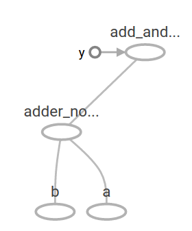

TensorFlow(4):TensorFlow Operation
1 Visualize with TensorBoard
import tensorflow as tf
a = tf.constant(2, name='a')
b = tf.constant(3, name='b')
x = tf.add(a, b, name='add')
with tf.Session() as sess:
writer = tf.summary.FileWriter('./graphs', sess.graph)
print(sess.run(x))media/15033836099887
writer.close() # close the writer when you're done using it.
5
Bash command (to view TensorBoard):
tensorboard --logdir='./graphs' --port 6006
# open http://localhost:6006/#graphs in your browser
Explicitly name operation, variable
a = tf.constant(2, name='a')
b = tf.constant(3, name='b')
x = tf.add(a,b,name='add')
with tf.Session() as sess:
writer = tf.summary.FileWriter('./graphs', sess.graph)
print(sess.run(x))
writer.close() # close the writer when you're done using it.
5
The figure produced by TensorBoard is as follows:

Note: Learn to use TensorBoard well and often. It will help a lot when you build complicated models.
2 Constant types
Tensors filled with a specific value
Using tensorflow.zeros to fill tensor with zeros, which is similar to Numpy:
tf.zeros(shape, dtype=tf.float32, name=None)
For example,
x = tf.zeros([2,3], tf.int32)
with tf.Session() as sess:
print(sess.run(x))
[[0 0 0]
[0 0 0]]
tensorflow.zeros_like return an tensor of zeros with the same shape and type as a given tensor. For example, we may want to have a tensor filled with zeros, with the same shape as x:
y = tf.zeros_like(x)
with tf.Session() as sess:
print(sess.run(y))
[[0 0 0]
[0 0 0]]
There are other command to fill tensor with a specific value, such as tensorflow.ones, tensorflow.ones_like, which of usage is similar to tensorflow.zeros, tensorflow.zeros_like.
tensorflow.fill creates a tensor filled with a scalar value:
tf.fill(dims, value, name=None)
z = tf.fill([3,4],3)
with tf.Session() as sess:
print(sess.run(z))
[[3 3 3 3]
[3 3 3 3]
[3 3 3 3]]
Constants as sequences
You can create constants that are sequences, using tf.linspace, tf.range:
tf.linspace(start, stop, num, name=None)
# create a sequence of num evenly-spaced values are generated beginning at start. If num > 1, the values in the sequence increase by stop - start / num - 1, so that the last one is exactly stop.
# start, stop, num must be scalars
# comparable to but slightly different from numpy.linspace
# numpy.linspace(start, stop, num=50, endpoint=True, retstep=False, dtype=None)
tf.range(start, limit=None, delta=1, dtype=None, name='range')
# create a sequence of numbers that begins at start and extends by increments of delta up to but not including limit
# slight different from range in Python
x = tf.linspace(10.0, 13.0, 4, name='linspace')
y = tf.range(3, 18)
z= tf.range(3, 18, 3)
with tf.Session() as sess:
print(sess.run(x))
print(sess.run(y))
print(sess.run(z))
[ 10. 11. 12. 13.]
[ 3 4 5 6 7 8 9 10 11 12 13 14 15 16 17]
[ 3 6 9 12 15]
3 Math Operations

a = tf.constant([[3,6],[0,0]])
b = tf.constant([[0,0],[2,2]])
x1 = tf.add(a, b)
x2 = tf.add_n([a,b,b]) # >> [7 10]. Equivalent to a + b + b
x3 = tf.multiply(a, b) # >> [6 12] because mul is element wise
x4 = tf.matmul(a, b) # >> ValueError
x5 = tf.matmul(tf.reshape(a, [4, 1]), tf.reshape(b, [1, 4])) # >> [[18]]
with tf.Session() as sess:
sess.run(a)
sess.run(b)
print('x1:\n', sess.run(x1))
print('x2:\n', sess.run(x2))
print('x3:\n', sess.run(x3))
print('x4:\n', sess.run(x4))
print('x5:\n', sess.run(x5))
x1:
[[3 6]
[2 2]]
x2:
[[3 6]
[4 4]]
x3:
[[0 0]
[0 0]]
x4:
[[12 12]
[ 0 0]]
x5:
[[ 0 0 6 6]
[ 0 0 12 12]
[ 0 0 0 0]
[ 0 0 0 0]]
4 TensorFlow data types:
Python Native Types
TensorFlow takes Python natives types: boolean, numeric (int, float), strings
TensorFlow takes in Python native types such as Python boolean values, numeric values (integers, floats), and strings. Single values will be converted to 0-d tensors (or scalars), lists of values will be converted to 1-d tensors (vectors), lists of lists of values will be converted to 2-d tensors (matrices), and so on.
tf.InteractiveSession() # open tensorflow interactivesession
t_0 = 19 # Treated as a 0-d tensor, or "scalar"
print('t_0:',t_0)
print(tf.zeros_like(t_0)) # ==> 0
print(tf.ones_like(t_0)) # ==> 1
t_1 = [b"apple" , b"peach" , b"grape"] # treated as a 1-d tensor, or "vector"
print('t_1:',t_1)
print(tf.zeros_like(t_1)) # ==> ['' '' '']
t_2= [[ True, False, False], [False, False, True], [False, True , False ]] # treated as a 2-d tensor, or "matrix"
print('t_2:',t_2)
print(tf.zeros_like(t_2)) # ==> 2x2 tensor, all elements are False
print(tf.ones_like(t_2)) # ==> 2x2 tensor, all elements are True
t_0: 19
Tensor("zeros_like_32:0", shape=(), dtype=int32)
Tensor("ones_like_20:0", shape=(), dtype=int32)
t_1: [b'apple', b'peach', b'grape']
Tensor("zeros_like_33:0", shape=(3,), dtype=string)
t_2: [[True, False, False], [False, False, True], [False, True, False]]
Tensor("zeros_like_34:0", shape=(3, 3), dtype=bool)
Tensor("ones_like_21:0", shape=(3, 3), dtype=bool)
Note: Do not use Python native types for tensors because TensorFlow has to infer Python type.
TensorFlow Native Types
Like NumPy, TensorFlow also its own data types such as tf.int32, tf.float32. Below is a list of current TensorFlow data types.
Numpy Data Types
By now, you’ve probably noticed the similarity between NumPy and TensorFlow. TensorFlow was designed to integrate seamlessly with Numpy, the package that has become the lingua franca of data science.
TensorFlow’s data types are based on those of NumPy; in fact, np.int32 == tf.int32 returns True. You can pass NumPy types to TensorFlow ops.
Example:
import numpy as np
tf.ones([2, 2], np.float32)
<tf.Tensor 'ones:0' shape=(2, 2) dtype=float32>
x = np.zeros((2,2))
tf.ones_like(x)
<tf.Tensor 'ones_like_22:0' shape=(2, 2) dtype=float64>
Constant
Constants are stored in the graph definition. This makes loading graphs expensive when constants are big. Only use constants for primitive types, use variables or readers for more data that requires more memory.
g = tf.Graph() # to add operators to a graph, set it as default:
with g.as_default():
my_const = tf.constant([1.0, 2.0], name="my_const")
with tf.Session() as sess:
print(sess.graph.as_graph_def())
node {
name: "my_const"
op: "Const"
attr {
key: "dtype"
value {
type: DT_FLOAT
}
}
attr {
key: "value"
value {
tensor {
dtype: DT_FLOAT
tensor_shape {
dim {
size: 2
}
}
tensor_content: "\000\000\200?\000\000\000@"
}
}
}
}
versions {
producer: 24
}
Variables
tf.constant is an operation, but tf.Variable is a class. tf.Variables holds several operations:
tf.InteractiveSession()
xx = tf.Variable(23, name='scalar')
xx.initializer # init op
xx.value() # read op
assign_op = xx.assign(5)
You have to initialize variables, The easiest way is initializing all variables at once:
init = tf.global_variables_initializer()
with tf.Session() as sess:
sess.run(init)
print(xx.eval())
sess.run(assign_op)
print(xx.eval())
23
5
Each session maintains its own copy of variable
W = tf.Variable(10, name='W')
sess1 = tf.Session()
sess2 = tf.Session()
sess1.run(W.initializer)
sess2.run(W.initializer)
print(sess1.run(W.assign_add(10)))
print(sess2.run(W.assign_sub(2))) # not 18!
sess1.close()
sess2.close()
20
8
Use a variable to initialize another variables
# want to declare U = 2*W
# W is random tensor
W = tf.Variable(tf.truncated_normal([4, 2]))
U = tf.Variable(2*W.initialized_value())
with tf.Session() as sess:
sess.run(U.initializer)
print(U.eval())
[[ 1.11442947 -3.1675539 ]
[ 3.02267933 -0.81786388]
[ 2.57613969 -0.98440802]
[ 0.6298722 -0.38194153]]
Session vs InteractiveSession,
You sometimes see InteractiveSession instead of Session. The only difference is an InteractiveSession makes itself the default.
sess = tf.InteractiveSession()
a = tf.constant(5.0)
b = tf.constant(6.0)
c = a*b
# We can just use `c.eval()` with out specifying the context `sess`
print(c.eval())
sess.close()
30.0
Placeholder
A TensorFlow program often has 2 phases:
- Assemble a graph
- Use a session to execute operations in the graph
\(\rightarrow\) can assemble the graph without knowing the values needed for computation
Analogy: Can define the function \(f(x,y) = x*2+y\) without knowing value of \(x\) or \(y\).
So using placeholders, we can later supply their data when they needed to execute the computation.
tf.placeholder(dtype, shape=None, name=None)
shape=None means that tensor of nay shape will be accepted as value for placeholder. Note: shape=None is easy to construct graphs, but nightmarish for debugging.
To make shape flexible, None can be used in the shape argument:
X = tf.placeholder(dtype=tf.float32, shape=[n_x, None], name='X')
Lazy loading
Lazy loading means defer creating/initializing an object until it is needed. In the context of TensorFlow, it means you defer creating an op until you need to compute it.
Normal loading:
g = tf.Graph()
with g.as_default():
x = tf.Variable(10, name='x')
y = tf.Variable(20, name='y')
z = tf.add(x,y) # you create the node for add node before executing the graph
with tf.Session() as sess:
sess.run(tf.global_variables_initializer())
for _ in range(10):
sess.run(z)
Lazy loading:
g = tf.Graph()
with g.as_default():
x = tf.Variable(10, name='x')
y = tf.Variable(20, name='y')
with tf.Session() as sess:
sess.run(tf.global_variables_initializer())
writer = tf.summary.FileWriter('./my_graph/12', sess.graph)
for _ in range(10):
sess.run(tf.add(x,y)) # someone decides to be clever to save one line of code
writer.close()
Note: In Lazy loading, Node ADD added 10 times to the graph definition. Image you want to compute an operations thousands of times, you graph gets bloated slow to load, and expensive to pass around.
Solution:
- Separate definition of ops from computing/running ops
- Use Python property to ensure function is also loaded once the first time it is called.
TensorFlow(2): Getting started with TensorFlow
TensorFlow Core tutorial
importing TensorFlow
import tensorflow as tf
The Computational Graph
A computational graph is a series of TensorFlow operations arranged into a graph of nodes. Let's build a simple computational graph. Each node takes zero or more tensors as inputs and produces a tensor as an output. One type of node is a constant. Like all TensorFlow constant, it takes no inputs, and it outputs a value it stores internally. We can create two floating point Tensor node1 and node2 as follows:
node1 = tf.constant(3.0, dtype=tf.float32)
node2 = tf.constant(4.0) # also tf.float32 implicitly
print(node1, node2)
Tensor("Const:0", shape=(), dtype=float32)
Tensor("Const_1:0", shape=(), dtype=float32)
To produce output values for node1 and nodes2, evaluation is needed. To actually evaluate the nodes, we must run the computational graph within a session. A session encapsulates the control and state of the Tensorflow runtime.
The following code creates a Session object and then invokes its run method to run enough of the computational graph to evaluate node1 and node2. By running the computational graph in a session as follows:
sess = tf.Session()
print(sess.run([node1, node2]))
[3.0, 4.0]
We can build more complicated computations by combining Tensor nodes with operations(Operations are also nodes). For example, we can add our two constant nodes and produce a new graph as follows:
node3 = tf.add(node1, node2)
print('node3:', node3)
print('sess.run(node3):', sess.run(node3))
node3: Tensor("Add:0", shape=(), dtype=float32)
sess.run(node3): 7.0
TensorFlow provides a utility called TensorBoard that can display a picture of the computational graph. Here is a screenshot showing how TensorBoard visualizes the graph:

As it stands, this graph is not especially interesting because it always produces a constant result. A graph can be parameterized to accept external inputs, known as placeholders. A placeholder is a promise to provide a value later.
a = tf.placeholder(tf.float32)
b = tf.placeholder(tf.float32)
adder_node = a + b # + provides a shortcut for tf.add(a,b)
The preceding three lines are a bit like a function or a lambda in which we define two input parameters (a and b) and then an operation on them. We can evaluate this graph with multiple inputs by using the feed_dict argument to the run method to feed concrete values to the placeholder:
print(sess.run(adder_node, {a:3, b:4.5}))
print(sess.run(adder_node, {a:[1,3], b:[2,4]}))
7.5
[ 3. 7.]
In TensorBoard, the graph looks like this:

We can make the computational graph more complex by adding another operation. For example,
add_and_triple = adder_node * 3.
print(sess.run(add_and_triple,{a:3, b:4.5}))
22.5
The preceding computational graph would look as follows in TensorBoard:

In machine learning we will typically want a model that can take arbitrary inputs, such as the one above. To make the model trainable, we need to be able to modify the graph to get new outputs with the same input. variables allow us to add trainable parameters to a graph. They are constructed with a type and initial value:
W = tf.Variable([.3], dtype=tf.float32)
b = tf.Variable([-.3], dtype=tf.float32)
x = tf.placeholder(tf.float32)
linear_model = W*x +b
Constants are initialized when you call tf.constant, and their value can never change. By contrast, variables are not initialized when you call tf.Variable. To initialize all the variables in a TensorFlow program, you must explicitly call a special operation as follows:
init = tf.global_variables_initializer()
sess.run(init)
It is important to realize init is a handle to the TensorFlow sub-graph that initializes all the global variables. Until we call sess.run, the variables are uninitialized.
Since x is a placeholder, we can evaluate linear_model for several values of x simultaneously as follows:
print(sess.run(linear_model,{x:[1,2,3,4]}))
[ 0. 0.30000001 0.60000002 0.90000004]
We've create a model, but we don't know how good it is yet. To evaluate the model on training data, we need a y placeholder to provide the desired values, and we need to write a loss function.
A loss function measures how far apart the current model is from the provided data. We'll use a standard loss model for linear regression, which sums the squares of the deltas between the current model and the provided data. linear_model -y creates a vector where each element is the corresponding example's error delta. We call tf.square to square that error. Then, we sum all the squared errors to create a single scalar that abstacts the error of all examples using tf.reduce_sum:
y = tf.placeholder(tf.float32)
squared_deltas = tf.square(linear_model - y)
loss = tf.reduce_sum(squared_deltas)
print(sess.run(loss, {x:[1,2,3,4], y:[0,-1,-2,-3]}))
23.66
We could improve this manually by reassigning the values of W and b to the perfect values of -1 and 1. A variable is initialized to the value provided to tf.Variable but can be changed using operations like tf.assign. FOr example, W=-1 and b=1 are the optimal parameters for our model. We can change W and b accordingly:
fixW = tf.assign(W, [-1.])
fixb = tf.assign(b, [1.])
sess.run([fixW, fixb])
print(sess.run(loss, {x:[1,2,3,4], y:[0,-1,-2,-3]}))
0.0
We guessed the "perfect" values of W and b, but the whole point of machine learning is to find the correct model parameters automatically. We will show how to accomplish this in the next section.
tf.train API
A complete discussion of machine learning is out of the scope of this tutorial. However, TensorFlow provides optimizers that slowly change each variable in order to minimize the loss function. The simplest optimizer is gradient descent. It modifies each variable according to the magnitude of the derivative of loss with respect to that variable. In general, computing symbolic derivatives manually is tedious and error-prone. Consequently, TensorFlow can automatically produce derivatives given only a description of the model using the function tf.gradients. For simplicity, optimizers typically do this for you. For example,
optimizer = tf.train.GradientDescentOptimizer(0.01)
train = optimizer.minimize(loss)
sess.run(init) # reset values to incorrect defaults
for i in range(1000):
sess.run(train, {x:[1,2,3,4], y:[0,-1,-2,-3]})
print(sess.run([W,b]))
[array([-0.9999969], dtype=float32), array([ 0.99999082], dtype=float32)]
Now we have done actual machine learning! Although doing this simple linear regression doesn't require much TensorFlow core code, more complicated models and methods to feed data into your model necessitate more code. Thus TensorFlow provides higher level abstractions for common patterns, structures, and functionality. We will learn how to use some of these abstractions in the next section.
Complete program
import tensorflow as tf
# Model parameters
W = tf.Variable([.3], dtype=tf.float32)
b = tf.Variable([-.3], dtype=tf.float32)
# Model input and output
x = tf.placeholder(tf.float32)
linear_model = W * x + b
y = tf.placeholder(tf.float32)
# loss
loss = tf.reduce_sum(tf.square(linear_model - y)) # sum of the squares
# optimizer
optimizer = tf.train.GradientDescentOptimizer(0.01)
train = optimizer.minimize(loss)
# training data
x_train = [1, 2, 3, 4]
y_train = [0, -1, -2, -3]
# training loop
init = tf.global_variables_initializer()
sess = tf.Session()
sess.run(init) # reset values to wrong
for i in range(1000):
sess.run(train, {x: x_train, y: y_train})
# evaluate training accuracy
curr_W, curr_b, curr_loss = sess.run([W, b, loss], {x: x_train, y: y_train})
print("W: %s b: %s loss: %s"%(curr_W, curr_b, curr_loss))
W: [-0.9999969] b: [ 0.99999082] loss: 5.69997e-11
This more complicated program can still be visualized in TensorBoard:

tf.estimator
tf.estimator is a high-level TensorFlow library that simplifies the mechanics of machine learning, including the following:
- running training loops
- running evaluation loops
- managing data sets
tf.estimatordefines many common models.
Basic usage
Notice how much simpler the linear regression program becomes with tf.estimator:
# NumPy is often used to load, manipulate and preprocess data.
import numpy as np
# Declare list of features. We only have one numeric feature. There are many
# other types of columns that are more complicated and useful.
feature_columns = [tf.feature_column.numeric_column("x", shape=[1])]
# An estimator is the front end to invoke training (fitting) and evaluation
# (inference). There are many predefined types like linear regression,
# linear classification, and many neural network classifiers and regressors.
# The following code provides an estimator that does linear regression.
estimator = tf.estimator.LinearRegressor(feature_columns=feature_columns)
# TensorFlow provides many helper methods to read and set up data sets.
# Here we use two data sets: one for training and one for evaluation
# We have to tell the function how many batches
# of data (num_epochs) we want and how big each batch should be.
x_train = np.array([1., 2., 3., 4.])
y_train = np.array([0., -1., -2., -3.])
x_eval = np.array([2., 5., 8., 1.])
y_eval = np.array([-1.01, -4.1, -7, 0.])
input_fn = tf.estimator.inputs.numpy_input_fn(
{"x": x_train}, y_train, batch_size=4, num_epochs=None, shuffle=True)
train_input_fn = tf.estimator.inputs.numpy_input_fn(
{"x": x_train}, y_train, batch_size=4, num_epochs=1000, shuffle=False)
eval_input_fn = tf.estimator.inputs.numpy_input_fn(
{"x": x_eval}, y_eval, batch_size=4, num_epochs=1000, shuffle=False)
# We can invoke 1000 training steps by invoking the method and passing the
# training data set.
estimator.train(input_fn=input_fn, steps=1000)
# Here we evaluate how well our model did.
train_metrics = estimator.evaluate(input_fn=train_input_fn)
eval_metrics = estimator.evaluate(input_fn=eval_input_fn)
print("train metrics: %r"% train_metrics)
print("eval metrics: %r"% eval_metrics)
INFO:tensorflow:Using default config.
WARNING:tensorflow:Using temporary folder as model directory: /var/folders/66/y1hc77j572v71r0gm2r39rfr0000gn/T/tmp2rnith_a
INFO:tensorflow:Using config: {'_model_dir': '/var/folders/66/y1hc77j572v71r0gm2r39rfr0000gn/T/tmp2rnith_a', '_tf_random_seed': 1, '_save_summary_steps': 100, '_save_checkpoints_secs': 600, '_save_checkpoints_steps': None, '_session_config': None, '_keep_checkpoint_max': 5, '_keep_checkpoint_every_n_hours': 10000, '_log_step_count_steps': 100}
INFO:tensorflow:Create CheckpointSaverHook.
INFO:tensorflow:Saving checkpoints for 1 into /var/folders/66/y1hc77j572v71r0gm2r39rfr0000gn/T/tmp2rnith_a/model.ckpt.
INFO:tensorflow:loss = 19.0, step = 1
INFO:tensorflow:global_step/sec: 592.325
INFO:tensorflow:loss = 0.192443, step = 101 (0.171 sec)
INFO:tensorflow:global_step/sec: 710.314
INFO:tensorflow:loss = 0.0370785, step = 201 (0.141 sec)
INFO:tensorflow:global_step/sec: 669.791
INFO:tensorflow:loss = 0.0173565, step = 301 (0.150 sec)
INFO:tensorflow:global_step/sec: 729.609
INFO:tensorflow:loss = 0.00361388, step = 401 (0.136 sec)
INFO:tensorflow:global_step/sec: 814
INFO:tensorflow:loss = 0.000215951, step = 501 (0.123 sec)
INFO:tensorflow:global_step/sec: 793.172
INFO:tensorflow:loss = 0.0001734, step = 601 (0.127 sec)
INFO:tensorflow:global_step/sec: 776.415
INFO:tensorflow:loss = 3.66416e-05, step = 701 (0.128 sec)
INFO:tensorflow:global_step/sec: 845.781
INFO:tensorflow:loss = 3.03422e-06, step = 801 (0.118 sec)
INFO:tensorflow:global_step/sec: 849.689
INFO:tensorflow:loss = 1.18453e-06, step = 901 (0.118 sec)
INFO:tensorflow:Saving checkpoints for 1000 into /var/folders/66/y1hc77j572v71r0gm2r39rfr0000gn/T/tmp2rnith_a/model.ckpt.
INFO:tensorflow:Loss for final step: 3.72255e-07.
INFO:tensorflow:Starting evaluation at 2017-08-21-05:57:38
INFO:tensorflow:Restoring parameters from /var/folders/66/y1hc77j572v71r0gm2r39rfr0000gn/T/tmp2rnith_a/model.ckpt-1000
INFO:tensorflow:Finished evaluation at 2017-08-21-05:57:40
INFO:tensorflow:Saving dict for global step 1000: average_loss = 6.05797e-08, global_step = 1000, loss = 2.42319e-07
INFO:tensorflow:Starting evaluation at 2017-08-21-05:57:40
INFO:tensorflow:Restoring parameters from /var/folders/66/y1hc77j572v71r0gm2r39rfr0000gn/T/tmp2rnith_a/model.ckpt-1000
INFO:tensorflow:Finished evaluation at 2017-08-21-05:57:42
INFO:tensorflow:Saving dict for global step 1000: average_loss = 0.00254753, global_step = 1000, loss = 0.0101901
train metrics: {'average_loss': 6.057968e-08, 'loss': 2.4231872e-07, 'global_step': 1000}
eval metrics: {'average_loss': 0.0025475256, 'loss': 0.010190102, 'global_step': 1000}
TensorFlow(3):What is a tensorflow session?
by Danijar Hafner, modified by larry
I’ve seen a lot of confusion over the rules of tf.Graph and tf.Session in TensorFlow. It’s simple:
- A
graphdefines the computation. It doesn’t compute anything, it doesn’t hold any values, it just defines the operations that you specified in your code. - A
sessionallows you to execute graphs or part of graphs. It allocates resources (on one or more machines) for that and holds the actual values of intermediate results and variables.
Let’s look at an example.
Defining the Graph
We define a graph with a variable and three operations: x returns the current value of our variable. init assigns the initial value of 42 to that variable. x_assign assigns the new value of 13 to that variable.
import tensorflow as tf
graph = tf.Graph()
with graph.as_default():
x = tf.Variable(42, name='foo')
init = tf.global_variables_initializer()
x_assign = x.assign(13)
On a side note: TensorFlow creates a default graph for you, so we don’t need the first two lines of the code above. The default graph is also what the sessions in the next section use when not manually specifying a graph.
Running Computations in a Session
To run any of the three defined operations, we need to create a session for that graph. The session will also allocate memory to store the current value of the variable.
with tf.Session(graph=graph) as sess:
sess.run(init)
sess.run(x_assign)
print(sess.run(x))
13
As you can see, the value of our variable is only valid within one session. If we try to query the value afterwards in a second session, TensorFlow will raise an error because the variable is not initialized there.
with tf.Session(graph=graph) as sess:
print(sess.run(x))
# Error: Attempting to use uninitialized value foo
Of course, we can use the graph in more than one session, we just have to initialize the variables again. The values in the new session will be completely independent from the first one:
with tf.Session(graph=graph) as sess:
sess.run(init)
print(sess.run(x))
42
Hopefully this short workthrough helped you to better understand tf.Session.

Copyright © 2015 Powered by MWeb, Theme used GitHub CSS.